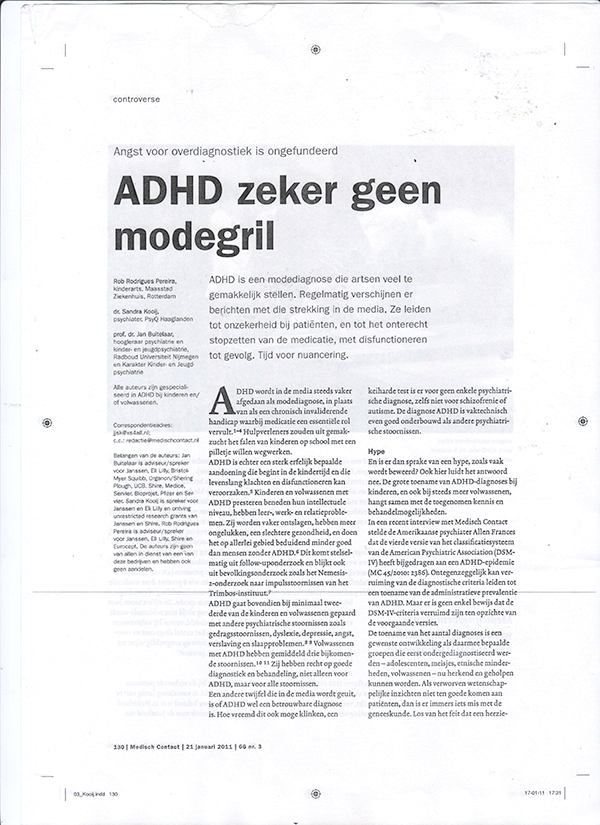

Hoe kan grafische vormgeving worden toegepast om het lezen van teksten te vergemakkelijken? voor mensen met ADHD
Voor je ligt voor mij één van de moeilijkste opgaves van mijn leven.
Een scriptie. Een scriptie vol met tekst... ja. Een tekst over een onderwerp dat mij zodanig boeit dat ik er wel 5000 woorden aan kan wijden. Voor ik startte aan de academie kwam ik erachter dat zelfs bij een kunstacademie een scriptie hoort. Daardoor begon ik te twijfelen of het wel zin had aan de opleiding te beginnen. Want dat zou betekenen dat ik het niet af zou kunnen maken zonder zo’n godvergeten afschuwelijk ding; een SCRIPTIE.
Maar wat nou als ik mijn weerstand tegen het schrijven van de scriptie gebruik om te onderzoeken waarom ik het zo lastig vind teksten te schrijven en lezen? Waarom kan ik het ene artikel wel volgen terwijl ik bij het andere niet verder kom dan de derde zin? Het zullen verschillende redenen zijn waarvan de vormgeving een groot onderdeel is. Een tijdje terug ben ik om een aantal redenen een experiment aangegaan, nadat ik al ruim 10 jaar geleden met
Vorig jaar bleven er een aantal dingen zich voordoen en besloot ik toch eens te kijken wat PsyQ coaching mij te bieden had. In eerste instantie was ik niet van plan medicatie te nemen. Toen ze bij mijn intakegesprek vroegen of ik er voor openstond heb ik aangegeven dat ik opensta om er meer informatie over in te winnen. De week erop zat ik met een gespecialiseerde dokter aan tafel die me vertelde welk medicijn het beste bij me zou passen. Op dat moment dacht ik: ‘misschien moet ik het gewoon proberen, om er achter te komen of ik nog steeds achter mijn visie sta dat ik uit mijn
Waar ik het eigenlijk over wil hebben is de wachtkamer van de

Of zouden er daadwerkelijk
Aan de hand hiervan wil ik literair onderzoek doen. Naar aanleiding van dit onderzoek zal ik stellingen bedenken die ik zal toetsen en kan ik vervolgens aanbevelingen doen hoe informatie zo aantrekkelijk mogelijk kan worden gepresenteerd voor
Daarnaast definieer ik wat grafische vormgeving betekent en hoe je dit in kan zetten. Ik denk niet per se dat er 1 juiste manier uitkomt omdat iedere
Iemand met
(Ik gebruik de term adhd ’er voor de leesbaarheid van mijn scriptie, want ik spreek over een persoon gediagnosticeerd met adhd . Het liefst maak ik er niet zo’n stempel van.)
De basis van beide termen is hetzelfde en vergelijkbare ervaringen kunnen het leven en gedrag beïnvloeden. Mensen met
“Kinderen met adhd hebben een serieus probleem. Al hun leraren zijn te saai.”(2)
Creatief en oplossingsgericht denken, snel kunnen schakelen en op zoek gaan naar uitdagingen kunnen zorgen voor bijzondere prestaties. Ook de hyperfocus (4) is duidelijk een positief kenmerk van
Het lastige is wel van zo’n hyperfocus dat dit de reactie opwekt bij je omgeving: “Ze kunnen het wel, als ze maar willen”. Er wordt echter vergeten dat het meestal geen bewust proces is dat mensen met
Er wordt vaak gesproken over aandacht tekort van mensen met
De ‘oplossing’ om met de eigenschappen van
Ik ben zelf van mening dat wanneer je de ruimte en het vertrouwen hebt gekregen van je omgeving om hier een weg in te vinden, je alles net zo goed als wie dan ook kunt doen op basis van je eigen kracht. Of misschien wel beter, want vergeet de gedrevenheid van een
Sommigen mensen raken weleens geërgerd als ze
Toch is er een groot verschil: Mensen met
Wanneer ik een tekst moet lezen voel ik een grote weerstand. Een weerstand die voortkomt uit de ervaring dat ik na 10 keer lezen nog niet weet wat er nou staat. Het ergert me, want het is niet dat de informatie die mogelijk in de tekst te vinden is me niet interesseert. In tegendeel. Daarom blijf ik het proberen maar in de meeste gevallen loopt dat toch weer uit op een teleurstelling. Dit maakt dat elke keer wanneer ik een lange tekst moet of wil lezen, ik in mijn achterhoofd al denk dat het me niet gaat lukken. Hierdoor staan die gedachten misschien nog wel meer in de weg dan mijn kunnen.
Ik open het boek en lees,
maar mijn ogen gaan sneller dan mijn hersenen,
of mijn hersenen sneller dan mijn ogen,
want wat ik lees, daar heb ik geen idee van.
Opnieuw vanaf het begin…
Ik lees, hoor buiten geluid.
Wat was dat voor geluid?
Waar kwam het vandaan?
En wat heb ik nu net gelezen?
Geen idee.
Opnieuw vanaf het begin…
Ik lees, voel een tinteling in mijn benen,
volg ‘m tot onder in mijn voeten
en vandaar weer terug omhoog.
Weer heb ik de alinea gelezen,
maar nog steeds geen idee van wat er stond.
Nog een keer vanaf het begin…
Ik lees, weer gaan mijn ogen als een razende,
en blijven mijn hersenen staan.
Of was het nu andersom en gingen mijn hersenen sneller dan mijn ogen?
Ik heb geen idee, net als dat ik geen idee heb van wat ik nu net las.
Ik blader door naar het laatste blad, zie onderaan een getal met drie cijfers,
sla het boek dicht en gooi het aan de kant.
237 pagina’s, terwijl ik nog niet door de eerste alinea heen kom.
Lang leve de adhd !
Ik neem in het vervolg wel een stripboek.
Peggy (31)
Ik heb wel ervaren dat ik in sommige gevallen minder last heb van het stemmetje in mijn achterhoofd. Bijvoorbeeld als ik een magazine lees. Meestal ga ik vooral voor de plaatjes, maar soms begin ik wel eens wat te lezen, dan zie je rechts onderin een stukje tekst staan waar mijn oog op valt. Ik begin dat te lezen zonder daar weerstand voor te voelen, ik zit er in, paar regels verder sla ik de bladzijde om, en zie dat er nog een hele pagina aan tekst achteraan komt. Als ik echt geboeid ben lees ik door, zonder hier stil bij te staan. Wanneer ik meteen het artikel op die bladzijde had opengeslagen was ik er nooit aan begonnen.
Zo weet ik uit eigen ervaring dat er meer van dit soort trucjes zijn die de tekst toegankelijker maken. Voor mij helpt het bijvoorbeeld ook als de tekst is opgedeeld in meerdere kleinere tekstjes, als er beeldmateriaal bij zit en als de tekstgrootte wat groter dan normaal is.
Ik kwam een online artikel tegen over
“Mijn ervaring is dat letters zonder krulletjes (zoals Arial) makkelijker te lezen zijn dan letters met (zoals Times New Roman). Ook de lettergrootte is van belang; een grotere letter is makkelijker te lezen en daardoor beter om je concentratie erbij te houden. Teksten op pc en tablet zijn vaak makkelijker voor ze te lezen, omdat ze de grootte zelf kunnen instellen. In boekvorm is dit natuurlijk niet mogelijk, vandaar dat grotere letters met een grotere regelafstand beter voor ze is.
Voor kinderen is er in de bibliotheek vaak een ‘makkelijk lezen plein’ waar boeken aangeboden worden met grotere letters. Mijn zoon heeft hier veel aan en kan dan de verhalen ook echt lezen, zonder te snel afgeleid te worden.
Qua vormgeving zou het fijn zijn als er meer rekening gehouden wordt met mensen die moeite hebben met lezen. Zo is het lettertype ‘Kozuka’ een fijn alternatief. Dit staat echter niet standaard op een pc. Verder is het prettig als er rust is op een pagina. Dus niet inspringen. En geen lange teksten achter elkaar, dus regelmatig een nieuwe alinea.”
Oké, dus de volgende dingen zouden moeten helpen bij het vergemakkelijken van het lezen van een tekst.
Van deze kleine aanpassingen kan je je goed voorstellen dat dit de leesbaarheid kan verbeteren. Ik vraag me af of er meer van dit soort aanpassingen en (persoonlijke) trucjes in de vormgeving zijn.
Om zelf te kunnen begrijpen waarom ik me de ene keer wel op iets kan concentreren en de andere keer niet, ben ik benieuwd naar hoe het hele proces van concentratie nou precies werkt. Als ik eerst onderzoek en definieer wat er nodig is om je te kunnen concentreren op een tekst, kan ik daarna misschien beter antwoord geven op mijn vraag; of ik als vormgever invloed kan hebben op het vergemakkelijken van een tekst lezen.
03.1 Motivatie
"Het is echt onderwerp-gerelateerd of ik iets kan lezen. Als ik iets interessant vind wíl ik dat lezen. Dan maakt het me niet uit of het een dik boek is."
- Robert Bal (28) Diagnose: ADD (zie interviews)
Om aan een geschreven stuk tekst beginnen heb je, ten eerste, motivatie nodig. Er moet iets in je zitten wat je gedreven maakt om de geschreven tekst tot je te willen nemen. Als er geen enkele motivatie te vinden is zal de concentratie het af laten weten. Er moet tenslotte een reden zijn waarom je voor een geschreven stuk tekst zit.
Maar een reden zoals ‘het moet voor school, om het jaar te halen’ kan voor iemand zonder
03.2 Concentratie Aandacht en (hyper)Focus
“Vroeger bouwde ik altijd een hutje als ik ging lezen, of ging ik onder de dekens zitten zodat ik niet afgeleid raakte door alles om mee heen. Sinds kort heb ik een nieuwe kast, die creëert een soort hoekje in mijn kamer, dat is nu mijn lees ‘hutje’”
- Jeroen Reek (25) Diagnose : ADHD (zie interviews)
Wat is concentratie ?
Het samentrekken op één punt (7)(8). Je bent continue geconcentreerd, maar niet altijd op hetgeen waar je je aandacht (9)(10) aan wilt besteden. Stel: je moet je concentreren op je huiswerk maar raakt ‘afgeleid’ door een vogel die voorbij vliegt. Op dat moment concentreer je je op de vogel.
Maar wat is dan het verschil tussen aandacht, concentratie en focus ?
Aandacht is zeer vergelijkbaar met concentratie. Het verschil is vaak dat je met aandacht over gerichte concentratie spreekt. Ofwel je concentreert je aandacht. Net zoals je wasmiddel kan concentreren.
Al die puntjes zijn dan ‘aandachtspuntjes’ maar wanneer je ze ‘concentreert’ heb je focus.
Om te beginnen aan een geschreven tekst begin je met
dan
en dan heb je
om die focus vast te houden moet dat wat je wilt lezen toegankelijk zijn om je aandacht vast houden. Hier speelt de opmaak van de tekst een grote rol in.
Mensen met
Hyperfocus
Tegenover de eigenschap van mensen met
3.3 Leesbaarheid en Typografie
“Mensen denken altijd omdat ik zelf zo chaotisch ben, ik ook mijn teksten zo zou opmaken. Maar ik doe eigenlijk het tegenovergestelde: heel veel wit, alinea’s, blokken en opsommingen. En plaatjes. Een plaatje is ‘even iets leuks’ en weet je wat ook chill is van een plaatje; dat er op die plek geen tekst is!”
- Annelies Bruins (25) diagnose : ADHD (zie interviews)
Of je nou met
“Ik wil bijna autistisch weten hoe dingen in elkaar steken. Als dingen voor mij worden ge-isoleerd snap ik het niet meer, ik wil overzicht hebben, ik wil alles kunnen zien.”
- Marije De Haan (30) diagnose : ADHD (zie interviews)
Ik realiseer me nu pas dat ik in publicaties de tekst altijd zo vormgaf dat het er visueel interessant uit zag, want ik dacht zelf altijd: “ik ga het toch niet lezen”. Hierdoor plaatste ik de inhoud van de tekst op de achtergrond en de vormgeving op de voorgrond. Ik hield totaal geen rekening met de leesbaarheid omdat dat me ook niet interesseerde. Het interesseerde me wel dat als je een spread zag het er als totaalbeeld mooi en interessant uitziet. Ik maakte van de tekst een plaatje.
Ik ben blij met de eindeloze opties voor het vormgeven van tekst. Maar wat is eigenlijk het effect daarvan?
03.3.A – Lettertypes
Er zijn een hoop artikelen en onderzoeken gewijd aan de invloeden van lettertypes op de inhoud van de tekst. Dat oneindige aanbod aan verschillende lettertypes standaard op je computer en (gratis) te downloaden via het internet doet de vraag bij me opkomen wat voor invloed dat heeft op de leesbaarheid.
Natuurlijk speelt typografie een grote rol in het logo van een bedrijf om de persoonlijkheid aan te geven, of op een poster van een feestje om de stijl van het feest te representeren. Maar wat doet of zegt de typografie over langere stukken tekst?
Daniel Oppenheimer een psycholoog van Princeton University deed een experiment met 51 studenten (11). Hij gaf de studenten een identieke tekst geschreven in het welbekende en de andere in het wat minder bekende . De studenten moesten op een schaal van 1-7 aangeven hoe slim ze dachten dat de auteur was. Je kunt wel raden dat de studenten die de tekst in lazen de auteur slimmer inschatten dan de studenten deden die de tekst in lazen.
Een ander onderzoek naar de werking van verschillende lettertypes is van de onderzoekers Song en Schwarz (12). Zij lieten mensen een tekst van twee regels lezen waarin een fitness oefening werd beschreven. De ene groep deelnemers kreeg de tekst te lezen in Arial, de andere groep kreeg precies hetzelfde te lezen maar in een ‘handgeschreven’ lettertype. Daarna vroegen ze de deelnemers aan het onderzoek hoe lang ze over de oefening dachten te gaan doen. Opmerkelijk genoeg zat er een groot verschil tussen de tijdsinschatting van beide groepen. De mensen die de tekst lazen in Arial dachten gemiddeld 8 minuten en 12 seconden te doen over de oefening. De andere groep, met het lastig leesbare, handgeschreven lettertype, dacht er veel langer over te doen: gemiddeld 15 minuten en 6 seconden. Hoe kan dit?
De mensen die de uitleg van de fitness-oefening lazen in Arial dachten de oefening bijna twee keer zo snel uit te voeren dan de mensen die het handgeschreven lettertype lazen. Het grote verschil tussen beide is hoe makkelijk leesbaar de tekst is. Arial is een prettig leesbaar lettertype; dit zorgt voor ‘cognitive fluency’. (=verwerkingssnelheid of -gemak).
De boodschap geschreven in Arial wordt makkelijk verwerkt, waardoor ons brein de inschatting maakt dat de oefening relatief makkelijk en snel uitgevoerd kan worden. Maar het ‘handgeschreven’ lettertype is lastig te verwerken voor het brein, waardoor de ingeschatte tijd voor het uitvoeren van de oefening veel hoger is. Ons brein denkt onbewust: ‘als het moeilijk te lezen is, is het ook moeilijk uit te voeren’. Ook gaan onze hersenen automatisch analytischer denken wanneer een tekst lastig te verwerken is. De tijdsinschatting valt ook hierdoor hoger uit, omdat men meer bewust is van alle onderdelen van de oefening die gedaan moeten worden.
Ik zou zelf denken dat het helpt een tekst aantrekkelijker te maken door te kiezen voor lettertypes die speelser en persoonlijker overkomen. Maar als ik naar dit onderzoek kijk, kan ik maar beter bij de simpele en vooral overzichtelijke lettertypes blijven om de drempel zo laag mogelijk te houden.
Al is hiërarchie wel belangrijk in je tekst om bepaalde delen uit te lichten en meer aandacht te geven.
Hiërarchie kan zitten in de accentuering (bold, italic, underline etc.) (13) Maar ook door een quote in een ander lettertype weer te geven trek je op een andere manier de aandacht. Het is dan weliswaar wat moeilijker te lezen maar blijft juist daardoor misschien beter hangen. Dit wordt bevestigd in een onderzoek van Connor Diemand-Yauman, Daniel M. Oppenheimer & Erikka B. Vaughan (Fortune favors the ( ): Effects of disfluency on educational outcomes )(14). Het onderzoek toont aan dat wanneer we een tekst lezen in een lettertype dat nieuw voor ons is, de boodschap weliswaar een fractie langzamer doordringt in onze hersenen, maar de informatie op termijn wel langer blijft hangen.
03.3.B Typografische accentuering
“(…) Ik ben denk ik te ongeduldig dus scan ik een tekst snel door, door de accentuering weet ik meteen waar ik naar moet kijken en wat ik ga lezen. Het moet natuurlijk niet té veel gebeuren en ik merk tijdens het scannen dat cursief me het minst trekt”
- Annelies Bruins (25) Diagnose : ADHD (zie interviews)
In de typografie wordt accentuering veelal gebruikt om delen van een tekst te benadrukken of uit de hoofdtekst te laten springen.
Het is wel duidelijk dat kleine veranderingen en aanpassingen van een tekst grote gevolgen kunnen hebben op de waarneming. Als er een accentuering wordt gebruikt die de helderheid van de tekst verandert, door bijvoorbeeld vette letters te gebruiken, of door veel witruimte rond woorden te introduceren, dan zal dit snel de aandacht trekken. Wanneer je teveel accentuaties gebruikt wordt de helderheid van een tekst alleen maar onduidelijker en onrustig.
Hiërarchie
Een tekstuele hiërarchie geeft inzicht en duidelijkheid over een tekst en maakt deze beter te verwerken. Deze hiërarchie kan op verschillende manieren worden gerealiseerd door verschillende afmetingen, stijlen en zwaartes van een font toe te passen.
Je kan bijvoorbeeld alle titels een zelfde kleur geven. Of opsommingen dikgedrukt maken, of namen cursief, of onderschrift bij bijvoorbeeld een foto in een ander lettertype. Of belangrijke informatie in een kader zetten. Maar nogmaals, wanneer je dit niet structureel toepast zal het juist de leesbaarheid wegnemen.
Italic (cursief)(15)
Italic betekent dat de letters een klein beetje naar rechts gekanteld zijn. Met cursieve tekst geef je vaak een citaat of onderschrift. Het is anders dan ‘regular’ maar springt er niet uit zoals ‘bold’ tekst dat wel doet.
Bold (vet)
Bold betekent dat de letters even groot zijn maar dikgedrukt. Door een woord bold (vet) te maken valt het op. Daarom worden vaak titels en kopjes van teksten bold gedrukt.
Underline (onderstrepen)
Onderstrepen is een andere methode om een (stukje) tekst op te laten vallen of te benadrukken. Het wordt echter afgeraden omdat het er onverzorgd uit ziet. Wanneer je iets wilt benadrukken ziet het er verzorgder uit wanneer het vetgedrukt (bold) is of - voor langere stukken tekst - cursief is geplaatst.
kleur (17)
Ook met kleur kun je hiërarchie aanbrengen in je tekst. kleur klinkt leuk, en ziet er vaak aantrekkelijk uit. Maar voor je je tekst in allemaal verschillende regenboogkleuren opmaakt zou ik nog even nagaan wat dat oplevert. Voor leesbaarheid is het vooral belangrijk om een contrast te creëren met de achtergrond en de tekst zelf.
Als je een witte achtergrond hebt en de tekst lichtgrijs instelt zal het onaantrekkelijk zijn om de tekst te gaan lezen omdat het vermoeiend is de voorgrond van de achtergrond te onderscheiden. Een witte achtergrond met zwarte letters is het meest voorkomend omdat deze het meest contrasteren. Wit reflecteert lichtstralen, terwijl zwart ze absorbeert.
Als je dus witte tekst moet lezen, worden de lichtstralen over een klein gebied teruggekaatst naar je ogen, wat dus zorgt voor een onrustig beeld. Bij zwarte letters wordt er niets teruggekaatst, wat dus rustiger is. Daarom kun je een grote tekst het beste zwart-op-wit plaatsen.
Witte tekst op een zwarte achtergrond werkt wel voor titels, koppen,
labels en knoppen. Om deze te benadrukken, kun je ze op een donkere ondergrond plaatsen. Doordat de witte tekst het licht reflecteert, valt het eerder op. Nu is het minder onrustig voor de ogen, omdat er niet zolang op dezelfde plek gefocust hoeft te worden. Dit wordt veel gebruikt op websites. Op een scherm werkt het naar mijn mening sowieso anders omdat het heel intens wit is en soms zo fel dat ik er hoofdpijn van krijg, ik vind het daarom rustgevender om een zwarte achtergrond te gebruiken maar met de tekst niet helemaal wit, maar licht grijs. Zo houd je genoeg contrast zonder je ogen te vermoeien. Ook heb ik een applicatie die de felheid van je scherm aanpast.
S p a t i ë r i n g
Om een tekst goed leesbaar te maken is het fijn dat er ruimte tussen de leestekens zit, een beetje lucht zullen we maar zeggen. De ruimte tussen elk leesteken verschilt omdat het verschillende vormen zijn. Als je de ‘i’ net zoveel ruimte geeft als de ‘o’ zul je zien dat er rare leegtes ontstaan.
Daarom heeft elk font zijn eigen spatiëring en leest het aanzienlijk fijner als dit goed gedaan is.
Ik vind het persoonlijk fijner lezen als de letters ruimte krijgen, je hebt ook fonts die naast weinig ruimte ook nog eens ‘condensed’ zijn (versmald), Je ziet hier Agenda - Medium Ultra Condensed op de eerste regel en Maax - regular op de tweede regel. Beide fonts staan op de zelfde punt grootte, maar je ziet het immense verschil.
Ik weet wel wat ik fijner vindt.
Er bestaan wel fonts die per leesteken de zelfde afstand gebruiken.
Deze heette ‘monospace’ fonts en worden voornamelijk gebruikt voor coderen.
Zoals Andale Mono, als je Andale Mono naast Helvetica zet zie je duidelijk verschil.
Beide woorden hebben 6 letters maar je ziet dat bij Helvetica ‘Tafels’ minder ruimte gebruikt.
Het voordeel van een Monospace font is dat het eenvoudig uitlijnt, voor coderen is het fijn dat de leestekens gestructureerd boven en naast elkaar staan. Voor het lezen van teksten is het minder prettig, en wordt het daarom ook zelden gebruikt buiten de computer.
Regelafstand
Is de afstand tussen de regels. Meestal is de afstand hetzelfde aantal punten als waar het lettertype op ingesteld staat.Wanneer je de regelafstand te klein doet gaan de de letters in elkaar smelten en wordt het een onoverzichtelijke woordenbrei. Té ver uit elkaar zal ook weer de rust verstoren.
KAPITALEN (en onderkast) (16)
Kapitalen (hoofdletters) gebruik je voor afkortingen of om nadruk te leggen op een bepaald woord. Mensen denken ook wel dat wanneer ze een tekst in kapitalen schrijven de tekst als belangrijker wordt gezien en ook meer autoriteit uitstraalt. Maar doordat de hiërarchie van de letters verdwijnt met kapitalen is het juist moeilijker te lezen. Wanneer je meer woorden wilt benadrukken kan dit ook door de lettergrootte aan te passen of andere accentuering te gebruiken.
- Gebruik accentuering, maar niet te veel! Want dan leid het juist af.
- Gebruik een overzichtelijke regelafstand en creëer hier genoeg ‘witruimte’ mee.
- Creëer een hiërarchie.
Ieder persoon met de diagnose AD(H)D ervaart dit anders, daarom was ik benieuwd naar de ervaring van andere ADHD’ers.
Ik maakte een test, waarin ik de geïnterviewde vroeg te kiezen tussen verschillende manieren van een opgemaakte tekst. Om zo uit te zoeken of er een duidelijke lijn in de keuzes zit of dat hier juist verschillende antwoorden uit zouden komen.
De proefpersonen moeten per vraag aangeven welke van de voorbeelden (opgemaakt op a4) hen het meest trekt tot het daadwerkelijk lezen van de tekst ( er van uit gaande dat elke tekst even lang is en precies de zelfde informatie omvat).
De vervolg vraag is afhankelijk van het antwoord dat wordt gekozen. Als je bij vraag 1 kiest voor optie C, het handgeschreven lettertype zal de rest van de test in dat lettertype zijn. Omdat niemand van de ondervraagde koos voor A en C bij vraag 1 laat ik de test alleen in het schreefloze lettertype zien van vraag 1 antwoord B.
Naast de antwoorden die je in de bijlage vindt heb ik veel van de informatie opgenomen in mijn onderzoek. Deze vind je in de quotes en in mijn conclusie terug.
Interviews
#1
Robbert Bal
Geschiedenis leraar in opleiding (geeft 2 dagen in de week les op het voortgezet onderwijs).
Robbert weet sinds 2 jaar dat hij ADD heeft.
Test
Vraag 1:
Omdat het in alinea’s is verdeeld, kernzinnen, overzichtelijke groottes van de stukjes.
Waarom niet 1C, omdat het gewoon een achterlijk lettertype is, dan haak ik al meteen af.
En bij 1A is het allemaal aan elkaar dus er zit geen structuur in.
Vraag 2: B
Ik vind A te groot. C is weer té veel kolommen, want bij 2 kolommen kan je nog overzicht houden maar ik vind het moeilijk te verwoorden. Maar mijn keuze gaat naar B, ook al zou ik A ook wel fijn vinden.
Het is ook wel iets dat je in de krant zou kunnen zien dat is herkenbaar , 3 kolommen vind ik dan weer te veel
Vraag 3: B
Die accentuering vind ik heel fijn, hoewel dat stukje ‘handgeschreven’ hoeft van mij niet.
Het maakt me nieuwsgieriger en het valt wel op, het schijnt ook te zijn dat kleurtjes goed helpen om te onthouden!
Vraag 4: D
Ik kies 4D want daar raak ik het minst op afgeleid. Ik vind sowieso als ik mijn blaadje moet kantelen om de tekst te kunnen lezen dan leid me dat te veel af.
Ik vind C te plat, maar D trekt me wel.
Vraag 5: B
Groen! Ik denk dat het te maken heeft met dat groen goed is , en rood fout! dan heb ik het idee dat als ik rood lees het fout is. vooral als je een rode en groene in je hand hebt, dan ga je altijd voor de groene.
Jana: Tot nu toe niet, sommige mensen vonden met rode achtergrond een beter contrast met de letters.
Robbert: Oh huh, dat zou ik niet zeggen, ik vind ook groene achtergrond in beter contrast met de letters.
#2
Annelies Bruins,
Derde jaars fotografie studente.
Vraag 1: B
C leest vervelend, A wel oké maar dan zie je 1B en die leest fijn, is overzichtelijk met net wat grotere letters.
Vraag 2: A
C lijkt chill omdat het in blokjes is maar de zinnen zijn net te kort om lekker door te lezen. Bij B denk ik dit is zoveel tekst terwijl ik bij A denk, o joh hier ben ik al bijna doorheen, ik vind het heel fijn dat het zo overzichtelijk is.
Vraag 3: B
Ik kies B omdat ik het fijn vindt dat ik meteen gescand heb wat belangrijk is en wat er in de tekst zit. Ik ben dan denk ik te ongeduldig dus scan ik een tekst snel door, door de accentuering weet ik meteen waar ik naar moet kijken en wat ik ga lezen alleen dat ‘handgeschreven’ woord in een handgeschreven lettertype vind ik irritant.
Jana: Waarom? Omdat het vermoeiend leest? Ben je daardoor minder geïnteresseerd in de tekst?
Annelies: Nee of naja eigelijk las ik het woord als eerste… Hmm misschien het wist goed dat het irritant leest.
In het geheel moet de accentuering niet té veel gebeuren en ik merk tijdens het scannen dat cursief me het minst trekt.
Vraag 4: A
De extra tekst als voorbeeld is me te veel, maar als het een plaatje was geweest had het me veel meer getrokken. Het pijltje naar ADHD werkt heel fijn, bij C en D lijkt het net alsof ik een wetenschappelijke tekst ziet te lezen. Bij A vind ik de alinea’s fijn maar de voorbeeld tekst er tussen gepropt niet. B is te druk met veel te veel tekst waardoor ik het hele overzicht kwijt raak.
Vraag 5: A
Dat kom omdat ik heel veel kleur gebruik in mijn agenda en aantekeningen boekjes, ik pak dan altijd rood want rood is belangrijk denk ik.
#3
Jeroen Reek
Muzikant en barman.
Vraag 1 : B
Bij A staat het teveel op elkaar en bij C moet ik te veel mijn best doen om het te lezen.
Vraag 2: A
Maar dan zou ik liever nog meer witruimte zien.
Vraag 3: A
Irritant is B, hier zo onderstreept hier weer cursief en hier vet gedrukt dan denk ik waar is dat allemaal voor nodig?
Vraag 4: C
Duidelijk. A is veelte onrustig net als magazine met foto’s, gebeurt veel te veel.
Vraag 5: Geen voorkeur
Wel rustgevend eigelijk een kleurtje. Maar hmm ik weet niet of het uitmaakt, niet persee voorkeur maar ik vind een beetje creme/gebroken wit wel fijner om van te lezen dan van dat gebleekte print papier
#4
Marije De Haan,
Mode ontwerpster, 6 jaar geleden afgestudeerd aan de KABK Den Haag
Vraag 1. B
A sowieso niet. Ik twijfel tussen B en C. C ziet er open uit maar iets te veel krulletjes.
Nee absoluut B.
Vraag 2. A
Ik weet niet of het komt omdat het groter is maar het is lekker overzichtelijk, het voelt niet als veel tekst.
Vraag 3. B
Omdat er duidelijke ijkpuntjes in zitten zodat mijn aandacht er beter bij blijft.
Vraag 4. D
Omdat het wel rustig genoeg is. A en B snap ik niks meer van. C en D blijven overzichtelijk..
Vraag 5. B
Gewoon gevoel, van A wordt ik heel onrustig, dat ik heel hard moet concentreren, daardoor heb ik heel veel moeite om naar rood te kijken. Mijn gevoel is gewoon heel onrustig bij rood en bij groen kan ik mijn ogen op de tekst houden.
In mijn onderzoek had ik verwacht dat ieder persoon met de diagnose
- Je kunt je pas goed op iets concentreren of motiveren als je daadwerkelijk interesse in de tekst hebt. Wanneer deze interesse heel groot is bestaat er een kans dat je in de hyperfocus-mode komt.
- Een schreefloos lettertype leest het fijnst.
- De tekst moet niet te klein, liever iets groter.
- Genoeg alinea’s, zodat het overzichtelijk blijft.
- Plaatjes worden in de meeste gevallen gewaardeerd mits ze wel overzichtelijk worden geplaatst.
- De tekst het liefst geprint, zodat je dingen kan markeren maar ook omdat je niet afgeleid raakt door alle andere mogelijkheden van een computer.
Uiteindelijk komt het er grotendeels op neer dat je de tijd moet hebben en de ruimte in je hoofd om de tekst waar te nemen. De manier waarop de tekst geschreven is, is soms belangrijker dan hoe het er uitziet. Je kan een wetenschappelijke tekst wel in schreefloze letter neerzetten met 16pt. groot, maar wanneer je continue onderbroken wordt door termen en namen zal het alsnog moeilijk zijn de tekst aandachtig door te nemen.

De meeste
Een ander voordeel van tekst op papier is dat het een stimulerend effect geeft wanneer je een bladzijde omslaat. Een soort beloningssysteem, dat ieder persoon uit mijn interviews herkende. Veel van hen gebruiken meerdere beloningen zoals ‘na dit hoofdstuk maak ik een lekker bakkie koffie voor mezelf’ of ‘nog een uur lezen en dan mag ik 1 aflevering van een serie kijken’. Dit hielp hen de taken stap voor stap gedaan te krijgen.
Je omgeving is ook erg belangrijk, de meesten vinden het fijn om een gezellig plekje of hoekje in te richten om daar beter te kunnen concentreren.
Wanneer ik het gevoel heb iets te ‘moeten’ merk ik dat het me op alle mogelijke manieren blokkeert. Het idee dat ik het niet kan is dan overheersend. Maar waarom vind ik daar dan geen weg in? Ik weet dit ondertussen steeds beter te tackelen en ik laat me er niet meer teveel door afschrikken. Voor ieder persoon is er een manier om dingen voor elkaar te krijgen, en wat voor de éen zo werkt, werkt voor de ander weer anders. Dit vind ik een bevrijdend idee en met dit in mijn achterhoofd raak ik minder snel in paniek wanneer ik niet meteen de juiste weg zie.
Te hoge verwachtingen van jezelf hebben heeft weinig zin, en wanneer je het idee hebt iets niet te kunnen kan je altijd kijken wat je wél zou kunnen. Vanaf daar kun je verder kijken naar de volgende stap. Maar eerst moet je focussen op de eerste stap.
Ik dacht altijd dat het aan mezelf lag als ik een tekst wilde lezen maar er niet inkwam. Een conclusie die ik naar aanleiding van mijn onderzoek heb getrokken is dat heel veel boeken gewoon vrij lastig zijn geschreven. Het hoeft dus helemaal niet aan mijn aandacht te liggen als ik er niet inkom maar aan de manier waarop het geschreven is. Ik denk dat ik door dit te realiseren opener sta voor tekst, en pas zal oordelen of ik het wel of niet ‘kan’ nadat ik het heb geprobeerd te lezen.
Aan het begin van mijn scriptie vertel ik over de
Ik begon de scriptie met de zin
“Voor je ligt voor mij één van de moeilijkste opgaves van mijn leven.
Een scriptie. Een scriptie vol met tekst...”
Het idee dat ik een hele scriptie moest gaan schrijven, en daarvoor ook allemaal dingen moest gaan lezen, beangstigde me enorm. Al voordat ik deze studie begon, keek ik hier tegen op. Het was enigszins een troost dat de verwachtingen van het resultaat bij deze academie minder hoog zouden zijn dan bij een theoretische of wetenschappelijke studie, maar alsnog zag ik mij niet zo snel een scriptie maken. Ik had er totaal geen beeld bij en daarom zag ik ook geen mogelijkheden of een ingang.
Door van mijn angst mijn onderwerp te maken was elk onderdeel van de weg in mijn scriptie bruikbaar studiemateriaal. Want wanneer ik afgeleid raakte of het moeilijk vond te beginnen probeerde ik dit meteen onder de loep te leggen: ‘waarom zou ik nu afgeleid raken, waarom krijg ik het niet voor elkaar te concentreren, waarom ben ik zo onrustig?’
Normaal zou ik totaal blokkeren omdat ik het gevoel zou hebben dat ik het niet kon. Nu was die ‘blokkade’ ineens bruikbaar materiaal om juist mee verder te kunnen.
Ik ben tijdens het schrijven allemaal lijstjes gaan verzamelen, zoals de ‘tien tips om je optimaal te kunnen concentreren’ en ’10 tips voor een productieve werkplek’*. Ik ben al deze tips gaan uitproberen. Alle tips bij elkaar leken vrij onmogelijk maar daardoor juist grappig om uit te werken. Gebaseerd op de onmogelijke hoeveelheid eisen van deze lijstjes heb ik een installatie gemaakt.
Maar van sommige tips heb ik wel profijt gehad. Pauze nemen komt bijvoorbeeld veel terug. De een zegt ‘elk half uur’. Dat leek me een beetje veel want dan zit ik er, als ik geluk heb, net ‘in’. Eerder nam ik nooit pauze. In mijn studio raakte ik wel veel afgeleid. Dan ging ik een beetje facebooken of niet-relevante dingen doen. Daar rust je niet van uit, terwijl een pauze daar juist voor zou moeten zorgen. Ik probeer niet om op bepaalde tijden, maar wanneer ik me niet kan concentreren, even op te staan en rond te lopen, of een bakkie koffie te zetten.
In een aantal lijstjes werd vermeld dat jongleren helpt om te concentreren. Ik heb daarom jongleerballetjes gekocht om te checken of dit zo was. Ik vind het lastig te beoordelen of het het jongleren is dat me helpt concentreren, of dat ik mijn werk afwissel met een activiteit. Voor hetzelfde geld had ik een ander fysiek trucje onder de knie proberen te krijgen. Maar ik weet hierdoor wel beter te luisteren naar de behoeftes van mijn lichaam. Ik heb nou eenmaal veel energie, ik zie dat als een hele fijne eigenschap. Maar tijdens het schrijven van een scriptie kan dat wel tegen werken. Het stilzitten onderbreken door wat balletjes in de lucht te gooien levert best wel een fijne afwisseling op.
Tijdens het schrijven van mijn scriptie merkte ik wel vaak dat ik een beetje van het pad raakte. Ik wist wel dat snel verbanden leggen een eigenschap is die veel mensen met adhd herkennen. Ik kwam er tijdens het schrijven van mijn scriptie achter dat dit inderdaad sterk aanwezig is maar daardoor ook lastig om op het ‘juiste’ concrete pad te blijven. Zoals Robbert (geschiedenisleraar met diagnose :add) vertelde dat, wanneer hij op school een tentamen heeft over een geschiedenisonderwerp, hij vaak middelmatige cijfers behaalde. Niet omdat hij slecht geleerd had, maar omdat hij juist té geïnteresseerd was. Hij ging niet alleen het hoofdonderwerp onderzoeken maar ook alle mogelijke vertakkingen die er mee te maken hadden. Wanneer hij het tentamen dan moest maken, wist hij er zoveel van af dat zijn antwoorden te omslachtig werden gevonden.
Dit herken ik heel erg. Ik raak voortdurend van het ‘juiste’ pad af, want dan denk ik: ‘ohhh dat is interessant’ en ‘ohhh dit heeft er natuurlijk ook mee te maken’. Interessant vind ik het allemaal maar het is misschien niet zo relevant voor mijn scriptie. Ik vind het lastig op tijd in te zien wanneer ik die zijpaden in ga. Ik verdwijn er helemaal in, dan zit ik in zo’n hyperfocus waardoor ik helemaal niet zie dat dit veel te ver van mijn onderwerp afgaat.
Ik keek er naar uit om bij het vormgeven van deze thesis goed uit te pakken, maar in mijn onderzoek kwam ik er achter dat, zoals ik het voor me zag, tegenstrijdig zal zijn aan mijn onderzoeksresultaten. Dit zou betekenen dat het ten koste zal gaan van de leesbaarheid en daarom verder van de inhoud af zal raken. Ik zal proberen een weg te vinden waar de inhoud en onderzoeksresultaten tot zijn recht komen maar het geheel ook visueel aantrekkelijk blijft.
DSM-IV criteria
De criteria voor de diagnose van AD(H)D zijn vastgelegd in het handboek DSM-IV. DSM staat voor Diagnostic Statistical Manual of Mental Disorders, het internationale classificatiesysteem van de geestelijke gezondheidszorg. De huidige versie (uit 2000) is een tekstrevisie van de vierde editie, aangeduid als DSM-IV-TR. ADD wordt in de DSM gezien als subtype van ADHD, namelijk type 1, het overwegend niet-oplettende type. De scores op deze criteria helpen medici bij het vaststellen van de diagnose, maar ze geven niet de doorslag.
Criteria voor de diagnose AD(H)D
A. Er is sprake van (1) en/of (2)
1. Aandachtstekort
Ten minste 6 van de 9 volgende symptomen bestaan al minstens een halfjaar in een mate die onaangepast is en niet in overeenstemming is met het verstandelijke niveau:
- let vaak niet goed op details of maakt slordigheidsfouten in schoolwerk of bij andere activiteiten
- heeft vaak moeite om de aandacht bij een taak of spel te houden
- lijkt vaak niet te luisteren wanneer iemand het woord tot hem of haar richt
- heeft vaak moeite om instructies volledig te volgen en maakt schoolwerk, taken of verplichtingen op het werk niet af (niet het gevolg van oppositioneel gedrag of het onvermogen instructies te begrijpen)
- heeft vaak moeite om taken en activiteiten te organiseren
- gaat taken die een langdurige mentale inzet vereisen (zoals schoolwerk of huiswerk) vaak uit de weg; heeft er een hekel aan of toont tegenzin ermee te beginnen
- raakt vaak dingen kwijt die nodig zijn voor taken of bezigheden (bijvoorbeeld speelgoed, opgaven van school, potloden, boeken of gereedschap)
- wordt vaak gemakkelijk afgeleid door uitwendige prikkels
- is vaak vergeetachtig bij dagelijkse bezigheden
2. Hyperactiviteit/impulsiviteit
Ten minste 6 van de 9 volgende symptomen bestaan al minstens een half jaar in een mate die onaangepast is en niet in overeenstemming is met het verstandelijke niveau:
Hyperactiviteit
- beweegt vaak onrustig de handen of voeten of wiebelt op zijn stoel
- staat op van zijn plaats in de klas of in andere situaties waar wordt verwacht dat iemand blijft zitten
- rent in situaties waar dit ongepast is vaak rond of klautert overal op (bij adolescenten en volwassenen kan dit beperkt blijven tot een subjectief gevoel van rusteloosheid)
- kan moeilijk rustig spelen of zich bezighouden met ontspannende activiteiten
- is vaak in de weer of draaft maar door
- praat vaak aan een stuk door
Impulsiviteit
- gooit het antwoord er al uit voordat de vraag is afgemaakt
- verstoort vaak bezigheden van anderen of dringt zich op
- heeft vaak moeite met op zijn/haar beurt te wachten
En behalve aan (1) en/of (2) voldoen de symptomen aan de volgende kenmerken:
- voor de leeftijd van 7 jaar was al sprake van enige symptomen op het gebied van hyperactiviteit, impulsiviteit of gestoorde aandacht, die aanleiding geven tot disfunctioneren
- enig disfunctioneren als gevolg van de symptomen doet zich voor in twee of meer contacten (bijvoorbeeld op school en thuis)
- er moet sprake zijn van duidelijke tekenen van niet goed functioneren op school, thuis, met vriendjes e.d.
B. Enkele symptomen van hyperactiviteit-impulsiviteit of onoplettendheid die beperkingen veroorzaken waren voor het zevende jaar aanwezig.
C. Enkele beperkingen uit de groep symptomen zijn aanwezig op twee of meer terreinen (bijvoorbeeld op school, werk en thuis).
D. Er moeten duidelijke aanwijzingen van significante beperkingen zijn in het sociale, school- of beroepsmatig functioneren.
E. De symptomen komen niet uitsluitend voor in het beloop van een pervasieve ontwikkelingsstoornis, schizofrenie of een andere psychotische stoornis en zijn niet eerder toe te schrijven aan een andere psychische stoornis (bijvoorbeeld stemmingsstoornis, angststoornis, dissociatieve stoornis of een persoonlijkheidsstoornis).